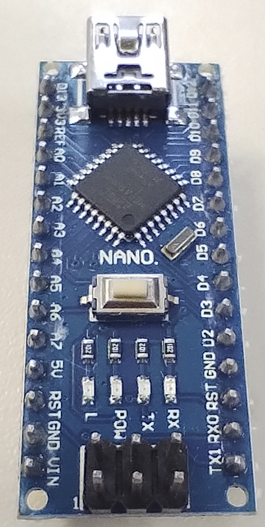

- Microcontrolador: ATmega328P
- Tensão de Operação: 5V
- Tensão de Entrada (recomendada): 7-12V
- Tensão de Entrada (limite): 6-20V
- Pinos de Entrada/Saída Digital: 14 (dos quais 6 fornecem saída PWM)
- Pinos de Entrada Analógica: 8
- Corrente DC por Pino de I/O: 40 mA
- Corrente DC para Pino de 3.3V: 50 mA
- Memória Flash: 32 KB (dos quais 2 KB são utilizados pelo bootloader)
- SRAM: 2 KB
- EEPROM: 1 KB
- Velocidade de Clock: 16 MHz
- Dimensões: 45 mm x 18 mm